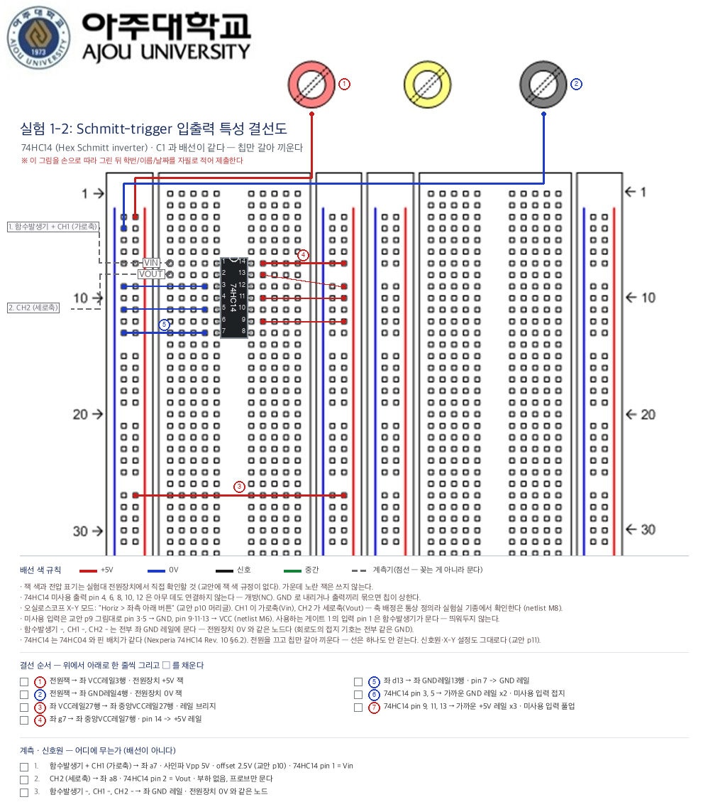

회로 1/2 · C1 · 실험 1-1) Inverter의 입출력 특성 확인 (74HC04) · 기록: T1 · 판독: oscilloscope
교안 p10 회로도 그대로. 게이트 1(pin 1 → pin 2)만 쓰고 나머지 다섯 게이트의 입력은 p9 그림대로 묶는다.

결선도: 실험02_1-1_결선도_인버터_입출력특성.png
U1 = 74HC04 (hex inverter, DIP-14)
- pin 14 → VCC(+5V)
- pin 7 → GND
- pin 1 ← 함수발생기 + (사인파 Vpp 5V, offset 2.5V) — CH1 + 프로브도 이 점에 문다 ※ Vin
- pin 2 → CH2 + 프로브 ※ Vout, T1 의 세로축
- 미사용 입력핀: pin 3, 5 → GND (교안 p9 그림 — Pull down)
- 미사용 입력핀: pin 9, 11, 13 → VCC (교안 p9 그림 — Pull up)
- 미사용 출력핀: pin 4, 6, 8, 10, 12 → 개방
- 함수발생기 -, CH1 -, CH2 - → GND (회로도의 접지 기호 셋)
계측
- 오실로스코프를 X-Y 모드로 놓는다: "Horiz > 좌측 아래 버튼"(교안 p10 머리글 — 기종은 M8). CH1(Vin) 이 가로축, CH2(Vout) 이 세로축 — 축 배정은 X-Y 모드의 통상 정의이고 교안 원문이 아니다(M8 에서 함께 확인)
- T1 캡션에 눈금(V/div)과 전이가 보이는 Vin 구간을 적는다 — 교안 원문이 아닌 기록 지시다(명세 T1 expected 와 같다)
T1 · 74HC04 Inverter 입출력 특성 (X-Y)
출처: manual:p10
판독 조건 — CH1 ______ V/div · CH2 ______ V/div · time/div ______ · 프로브 ______× · 모드 [ ] Y-T [ ] X-Y
캡션: ____________________ 사진 파일: ____________________
사진: 파형 자체가 결과물이다. 파일명 T1 row1.jpg 형식
회로 2/2 · C2 · 실험 1-2) Schmitt-trigger의 입출력 특성 확인 (74HC14) · 기록: T2 · 판독: oscilloscope
교안 p11 "앞선 회로 구성 및 설정을 유지하고, IC를 74HC14로 교체한다". 배선·신호원· X-Y 모드 전부 C1 그대로. 칩만 갈아 끼운다 — 핀 배치가 같다(# 핀아웃 출처).
단계 1

이 단계에서: 전원을 끄고 74HC04 를 뽑아 74HC14 를 같은 자리(S1)에 꽂는다. 선은 하나도 안 걷는다. 전원을 켠다
확인: T2 — X-Y 화면에 닫힌 고리가 보이고 오른쪽·왼쪽 세로 에지의 Vin 눈금을 캡션에 적는다
완성본 — 손그림 원도 (회색 없음)

결선도: 실험02_1-2_결선도_슈미트트리거_입출력특성.png
U1 = 74HC14 (hex inverting Schmitt trigger, DIP-14) — C1 의 74HC04 자리에 꽂는다
- pin 14 → VCC(+5V)
- pin 7 → GND
- pin 1 ← 함수발생기 + (사인파 Vpp 5V, offset 2.5V) — CH1 + 프로브 ※ Vin
- pin 2 → CH2 + 프로브 ※ Vout, T2 의 세로축
- 미사용 입력핀: pin 3, 5 → GND (교안 p9 — 74HC14 도 같은 규칙)
- 미사용 입력핀: pin 9, 11, 13 → VCC (교안 p9)
- 미사용 출력핀: pin 4, 6, 8, 10, 12 → 개방
계측
- C1 과 같은 X-Y 설정을 유지한다. C1 의 화면과 나란히 비교한다(교안 p11 "결과를 비교한다")
T2 · 74HC14 Schmitt-trigger 입출력 특성 (X-Y)
출처: manual:p11
판독 조건 — CH1 ______ V/div · CH2 ______ V/div · time/div ______ · 프로브 ______× · 모드 [ ] Y-T [ ] X-Y
캡션: ____________________ 사진 파일: ____________________
사진: 파형 자체가 결과물이다. 파일명 T2 row1.jpg 형식